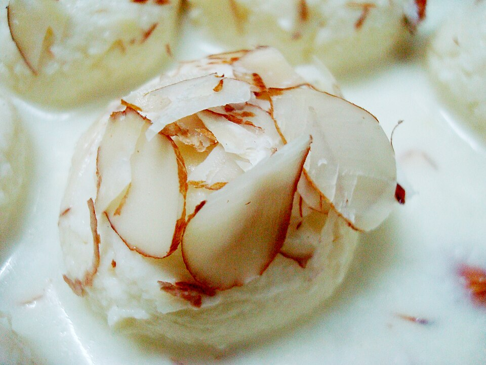

Home
Rasmalai

Dharmadhyaksha, CC BY-SA 4.0 , via Wikimedia Commons
Description
Ras malai, also known as rasamalei, or roshmalai, is a dessert that originated in the Bengal region of Indian subcontinent.
The dessert is called roshmalai in Bengali, ras malai in Hindi, and rasa malei in Odia. It is popular in India, Bangladesh and Pakistan.
Ingredients
- Milk
- Sugar
- Lemon Juice
- Pistachios
- Saffron
- Rose water
- Cardamom
Steps
- Boil the milk and add a small amount of lemon juice to curdle it
- Discard the whey and drain the chhena, let it cool and knead it into a dough.
- Divid it into small balls, and cook them in a sugar-water mix.
- Soak the cooked chhena balls in milk mixed with saffron, pistachios, rose water, and cardamom.